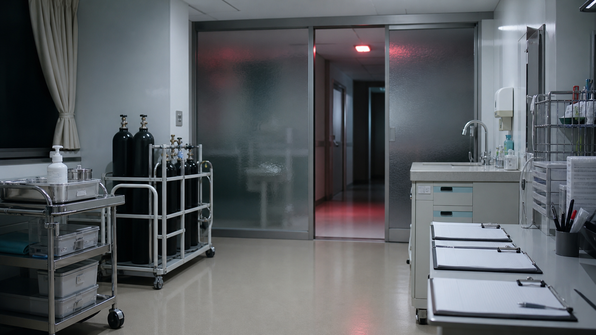

午前診療
内科診療、検査説明、処方相談を中心に対応します。
CARE SYSTEM
一般診療、夜間処置、訪問相談を連携し、必要な記録を院内で安全に共有します。

内科診療、検査説明、処方相談を中心に対応します。
第二処置室で点滴、創処置、酸素管理を行います。
夜間カードで入退室を管理し、必要な処置記録のみ保存します。
INTERNAL MEDICINE
発熱、生活習慣病、慢性疾患の相談を中心に、必要に応じて検査説明と処方調整を行います。
TREATMENT ROOM
点滴、創処置、酸素管理は第二処置室で行います。使用薬剤と処置時刻は薬剤棚ログと照合します。
HOME CARE
地域連携先からの依頼に応じ、通院が難しい方の相談を受け付けています。
夜間処置後の記録は、翌朝の申し送りで受付控え、処置記録、薬剤棚ログの順に確認します。
NIGHT PROCEDURE ROUTE
処置室の使用後は、薬剤棚の残数、手洗い場の清掃、裏口廊下の施錠を順番に確認します。未処理票が残る場合は、受付ではなく記録保管棚へ戻します。